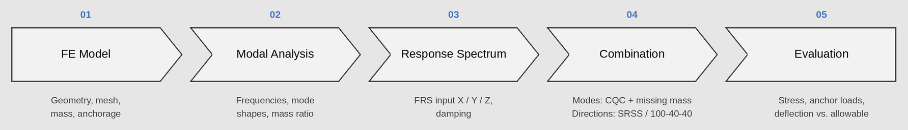
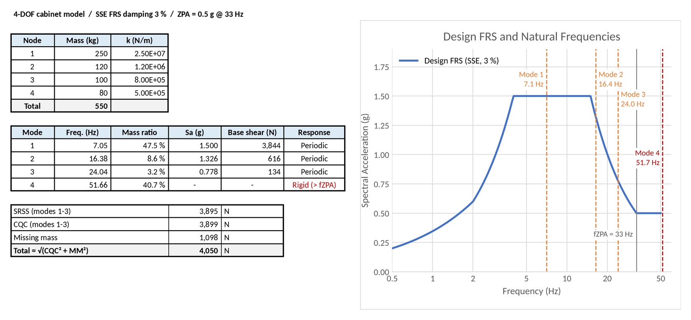
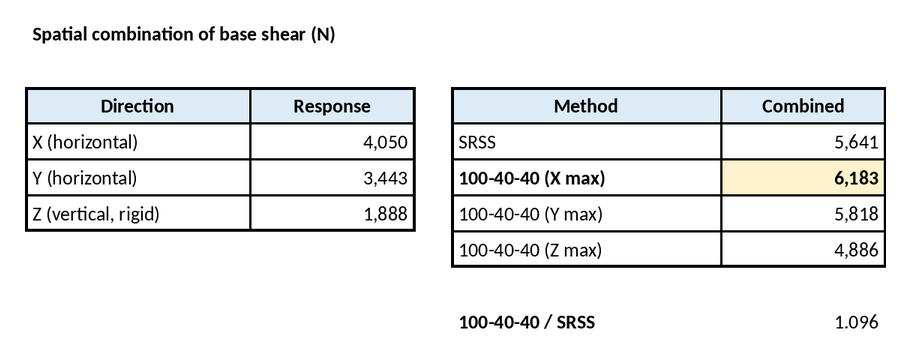

원자력발전소의 안전성 관련 기기는 설계기준지진(SSE) 동안과 그 이후에도 구조 건전성을 유지하고 안전 기능을 수행해야 합니다.
이를 입증하는 것이 IEEE Std 344(현재 IEC/IEEE 60980-344)에 따른 내진검증(Seismic Qualification)입니다.
내진검증은 해석, 시험, 해석과 시험의 조합, 또는 경험 데이터로 수행할 수 있습니다.
캐비닛, 랙, 탱크, 지지부 같은 수동 기기는 주로 해석으로, 기능을 확인해야 하는 능동 기기는 주로 진동대 시험으로 검증합니다.

해석으로 검증하는 기기는 Response Spectrum법을 가장 많이 씁니다.
우선, ANSYS Mechanical에서 Modal 해석을 먼저 풀어 유한요소 모델의 고유진동수, Mode Shape, Effective Mass를 구합니다.
이어서 Modal 해석 결과에 Response Spectrum 해석을 연결하고, X, Y, Z 방향의 층응답스펙트럼(FRS)을 정해진 Damping 값으로 고정부에 입력합니다.
모드 응답은 SRSS 또는 CQC로 조합하고, Missing Mass 옵션으로 잔류 강체 응답을 더한 뒤, 세 방향 결과를 조합합니다.
마지막으로 응력, Anchor Bolt 하중, 변위를 허용값과 비교합니다.

각 모드는 서로 다른 시각에 최대 응답에 도달하므로, 모드별 최대값을 단순히 더할 수는 없습니다.
모드가 충분히 떨어져 있으면 SRSS를 씁니다. 모드가 근접한 경우(Damping 2 % 이하에서 진동수 차이 10 % 이내)에는 모드 간 상관성을 고려하는 CQC를 씁니다.
ZPA 진동수보다 높은 모드는 입력과 같은 위상으로 강체처럼 응답합니다.
이 기여분은 Missing Mass 방법으로 포함하며, RG 1.92 Rev. 3에서는 고주파 모드 기여분에 대해 이 방법만을 인정합니다.
세 지진 방향의 응답은 SRSS로 조합하며, 대안으로 100-40-40 규칙을 쓸 수도 있습니다.

이번 예제에서는 캐비닛을 단순화한 4자유도 집중질량 모델(총 질량 550 kg)을 SSE 설계 FRS(Damping 3 %, 33 Hz에서 ZPA 0.5 g)로 해석합니다.
원자력 기기 내진검증에서 FRS Damping 값은 SSE 3 %, OBE 2 %를 씁니다.
모드 1~3은 ZPA 진동수보다 낮아 CQC로 조합하고(3,899 N), 질량의 40.7 %를 차지하는 51.7 Hz의 모드 4는 Missing Mass로 강체 처리합니다(1,098 N).
X 방향 총 밑단 전단력은 4,050 N으로, 모드 결과만 쓴 경우보다 약 4 % 큽니다.
방향 조합에서는 100-40-40 규칙이 SRSS보다 약 10 % 큰 값을 줍니다.


SRS 분석 도구 사용해 보기